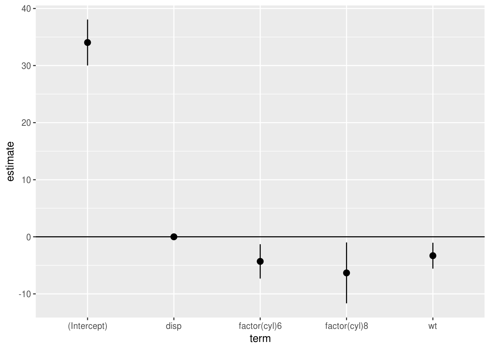
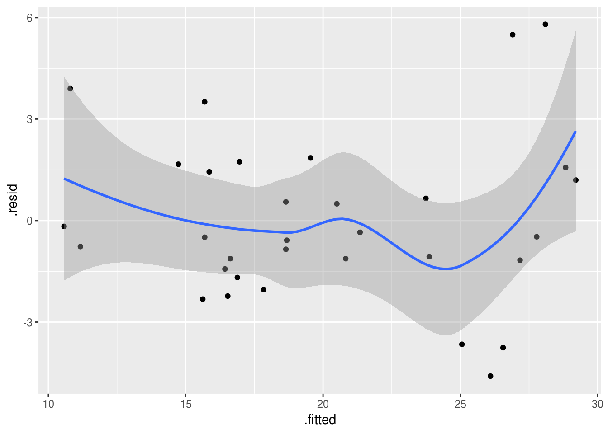
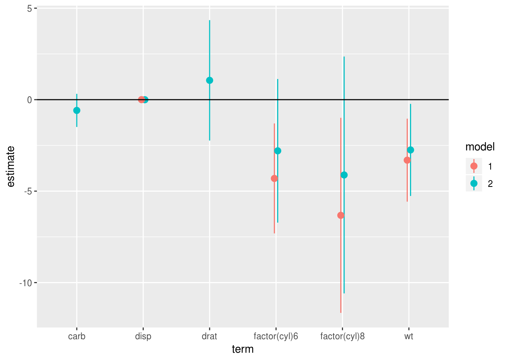

17 Models are data
You might remember the episode of the Simpsons where Homer designs a car for ‘the average man’. It doesn’t end well. Traditional statistics packages are a bit like Homer’s car. They try to work for everyone, but in the process become bloated and difficult to use.
This is particularly true of the output of software like SPSS, which by default produces multiple pages of ‘results’ for even relatively simple statistical models. However, the problem is not just that SPSS is incredibly verbose.
The real issue is that SPSS views the results of a model as the end of a process, rather than the beginning. The model SPSS has is something like:
- Collect data
- Choose analysis from GUI
- Select relevant figures from pages of output and publish.
This is a problem because in real life it just doesn’t work that way. In reality you will want to do things like:
- Run the same model for different outcomes
- Re-run similar models as part of a sensitivity analysis
- Compare different models and produce summaries of results from multiple models
All of this requires an iterative process, in which you may want to compare and visualise the results of multiple models. In a traditional GUI, this quickly becomes overwhelming.
However, if we treat modelling as a process which both consumes and produces data, R provides many helpful tools.
This is an important insight: in R, the results of analyses are not the end point — instead model results are themselves data, to be processed, visualised, and compared.
Storing models in variables
This may seem obvious (and we have seen many examples in the sections above), but because R variables can contain anything, we can use them to store the results of our models.
This is important, because it means we can keep track of different versions of the models we run, and compare them.
Extracting results from models
One of the nice things about R is that the summary() function will almost
always provide a concise output of whatever model you send it, showing the key
features of an model you have run.
However, this text output isn’t suitable for publication, and can even be too verbose for communicating with colleagues. Often, when communicating with others, you want to focus in on the important details from analyses and to do this you need to extract results from your models.
Thankfully, there is almost always a method to extract results to a
dataframe. For example, if we run a linear model:
model.fit <- lm(mpg ~ wt + disp, data=mtcars)
summary(model.fit)
Call:
lm(formula = mpg ~ wt + disp, data = mtcars)
Residuals:
Min 1Q Median 3Q Max
-3.4087 -2.3243 -0.7683 1.7721 6.3484
Coefficients:
Estimate Std. Error t value Pr(>|t|)
(Intercept) 34.96055 2.16454 16.151 4.91e-16 ***
wt -3.35082 1.16413 -2.878 0.00743 **
disp -0.01773 0.00919 -1.929 0.06362 .
---
Signif. codes: 0 '***' 0.001 '**' 0.01 '*' 0.05 '.' 0.1 ' ' 1
Residual standard error: 2.917 on 29 degrees of freedom
Multiple R-squared: 0.7809, Adjusted R-squared: 0.7658
F-statistic: 51.69 on 2 and 29 DF, p-value: 2.744e-10We can extract the parameter table from this model by saving the summary() of
it, and then using the $ operator to access the coefficients table (actually
a matrix), which is stored within the summary object.
model.fit.summary <- summary(model.fit)
model.fit.summary$coefficients
Estimate Std. Error t value Pr(>|t|)
(Intercept) 34.96055404 2.164539504 16.151497 4.910746e-16
wt -3.35082533 1.164128079 -2.878399 7.430725e-03
disp -0.01772474 0.009190429 -1.928609 6.361981e-02‘Poking around’ with $ and @
It’s a useful trick to learn how to ‘poke around’ inside R objects using the $
and @ operators (if you want the gory details
see this guide).
In the video below, I use RStudio’s autocomplete feature to find results buried
within a lm object:
For example, we could write the follwing to extract a table of coefficients,
test statistics and p values from an lm() object (this is shown in the
video:
model.fit.summary <- summary(model.fit)
model.fit.summary$coefficients %>%
as_data_frame()
Warning: `as_data_frame()` is deprecated, use `as_tibble()` (but mind the new semantics).
This warning is displayed once per session.
# A tibble: 3 x 4
Estimate `Std. Error` `t value` `Pr(>|t|)`
<dbl> <dbl> <dbl> <dbl>
1 35.0 2.16 16.2 4.91e-16
2 -3.35 1.16 -2.88 7.43e- 3
3 -0.0177 0.00919 -1.93 6.36e- 2Save time: use a broom
The broom:: library is worth
learning because it makes it really easy to turn model results into dataframes,
which is almost always what we want when working with data.
It takes a slightly different approach than simply poking around with $ and @, because it providing general methods to ‘clean up’ the output of many older R functions.
For example, the lm() or car::Anova functions display results in the
console, but don’t make it easy to extract results as a dataframe. broom::
provides a consistent way of extracting the key numbers from most R objects.
Let’s say we have a regression model:
(model.1 <- lm(mpg ~ factor(cyl) + wt + disp, data=mtcars))
Call:
lm(formula = mpg ~ factor(cyl) + wt + disp, data = mtcars)
Coefficients:
(Intercept) factor(cyl)6 factor(cyl)8 wt disp
34.041673 -4.305559 -6.322786 -3.306751 0.001715 We can extract model fit statistics — that is, attributes of the model as a
whole — with glance(). This produces a dataframe:
glance(model.1)
# A tibble: 1 x 11
r.squared adj.r.squared sigma statistic p.value df logLik AIC BIC
<dbl> <dbl> <dbl> <dbl> <dbl> <int> <dbl> <dbl> <dbl>
1 0.838 0.813 2.60 34.8 2.73e-10 5 -73.3 159. 167.
# … with 2 more variables: deviance <dbl>, df.residual <int>If we want to extract information about the model coefficients we can use
tidy:
tidy(model.1, conf.int = T) %>%
pander| term | estimate | std.error | statistic | p.value | conf.low | conf.high |
|---|---|---|---|---|---|---|
| (Intercept) | 34.04 | 1.963 | 17.34 | 3.662e-16 | 30.01 | 38.07 |
| factor(cyl)6 | -4.306 | 1.465 | -2.939 | 0.006662 | -7.311 | -1.3 |
| factor(cyl)8 | -6.323 | 2.598 | -2.433 | 0.02186 | -11.65 | -0.9913 |
| wt | -3.307 | 1.105 | -2.992 | 0.005855 | -5.574 | -1.039 |
| disp | 0.001715 | 0.01348 | 0.1272 | 0.8997 | -0.02595 | 0.02938 |
Which can then be plotted easily (adding the conf.int=T includes 95%
confidence intervals for each parameter, which we can pass to ggplot):
tidy(model.1, conf.int = T) %>%
ggplot(aes(term, estimate, ymin=conf.low, ymax=conf.high)) +
geom_pointrange() +
geom_hline(yintercept = 0)
Finally, we can use the augment function to get information on individual rows
in the modelled data: namely the fitted and residual values, plus common
diagnostic metrics like Cooks distances:
augment(model.1) %>%
head() %>%
pander(split.tables=Inf)| .rownames | mpg | factor.cyl. | wt | disp | .fitted | .se.fit | .resid | .hat | .sigma | .cooksd | .std.resid |
|---|---|---|---|---|---|---|---|---|---|---|---|
| Mazda RX4 | 21 | 6 | 2.62 | 160 | 21.35 | 1.058 | -0.3468 | 0.1653 | 2.652 | 0.0008423 | -0.1458 |
| Mazda RX4 Wag | 21 | 6 | 2.875 | 160 | 20.5 | 1.009 | 0.4964 | 0.1501 | 2.651 | 0.001512 | 0.2069 |
| Datsun 710 | 22.8 | 4 | 2.32 | 108 | 26.56 | 0.7854 | -3.755 | 0.09103 | 2.538 | 0.04586 | -1.513 |
| Hornet 4 Drive | 21.4 | 6 | 3.215 | 258 | 19.55 | 1.355 | 1.853 | 0.2711 | 2.618 | 0.05169 | 0.8336 |
| Hornet Sportabout | 18.7 | 8 | 3.44 | 360 | 16.96 | 0.9784 | 1.739 | 0.1413 | 2.627 | 0.0171 | 0.7209 |
| Valiant | 18.1 | 6 | 3.46 | 225 | 18.68 | 1.059 | -0.5806 | 0.1654 | 2.65 | 0.002363 | -0.2442 |
Again these can be plotted:
augment(model.1) %>%
ggplot(aes(x=.fitted, y=.resid)) +
geom_point() +
geom_smooth()
`geom_smooth()` using method = 'loess' and formula 'y ~ x'
Because broom always returns a dataframe with a consistent set of column names
we can also combine model results into tables for comparison. In this plot we
see what happens to the regression coefficients in model 1 when we add disp,
carb and drat in model 2. We plot the coefficients side by side for ease of
comparison, and can see that the estimates for cyl1 and wt both shrink slightly
with the addition of these variables:
# run a new model with more predictors
(model.2 <- lm(mpg ~ factor(cyl) + wt + disp + carb + drat, data=mtcars))
Call:
lm(formula = mpg ~ factor(cyl) + wt + disp + carb + drat, data = mtcars)
Coefficients:
(Intercept) factor(cyl)6 factor(cyl)8 wt disp
29.849209 -2.796142 -4.116561 -2.748229 -0.002826
carb drat
-0.587422 1.056532
# make a single dataframe from both models
# addin a new `model` column with mutate to
# identify which coefficient came from which model
combined.results <- bind_rows(
tidy(model.1, conf.int = T) %>% mutate(model="1"),
tidy(model.2, conf.int = T) %>% mutate(model="2"))combined.results %>%
# remove the intercept to make plot scale more sane
filter(term != "(Intercept)") %>%
ggplot(aes(term, estimate, ymin=conf.low, ymax=conf.high, color=model)) +
geom_pointrange(position=position_dodge(width=.1)) +
geom_hline(yintercept = 0)